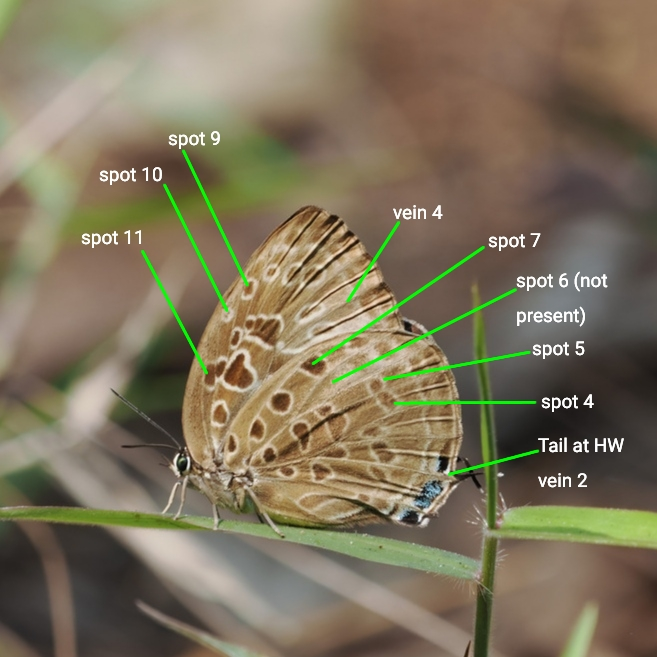

Where to start
Open with your photo. Mark only the features you can clearly see — candidates are ranked in real time. Leave anything unclear blank; unanswered questions do not penalise any candidate.
Know these five terms before you score
Photo tip: the forewing base is usually hidden under the hindwing in resting shots — skip any feature that isn't clearly visible. A sharp underside photo with the hindwing fully in view is enough to score most questions.
Open C&P+ →Reference diagrams for wing space numbering, morphological features, and structural landmarks used in the scoring questions.
About Arhopala ID
Arhopala ID is an identification aid for Malaysian Oakblue butterflies (Arhopala spp.). Rather than memorising numerous closely related species, the app guides users through key diagnostic morphological characters — such as the presence or absence of tails, wing-spot position and arrangement, and banding patterns — progressively narrowing down the most likely species.
Simplified wing regions — underside anatomy
Before looking at individual spots, it helps to know the named regions of the wing. The diagram below shows the forewing (top) and hindwing (bottom) divided into the zones whose names appear throughout the Arhopala literature and in this key.

The forewing (top) is divided into the Basal area near the wing base, the Post-Discal zone where most identification spots sit, and the Apex at the tip — the outer margin running between apex and tornus is the Termen. The hindwing (bottom) adds a Sub-marginal band between the postdiscal row and the termen, and the Tornal area at the anal angle (lower inner corner) — the lobe here and the tail at its tip are structural characters used throughout the cleander group questions.
Wing spaces (venation)
Each area between two adjacent veins on the wing is called a space (also written as "cell" in some literature). Spaces are numbered from the inner margin outward. The key questions refer to spots and markings by their space number — for example, "postdiscal spot in space 6" means the spot in the sixth space of the hindwing. Note that vein 8 is absent in all Arhopala — and with it space 8 — so the forewing numbering skips directly from 7 to 9.

Forewing (upper): spaces 1b, 2–9 along the inner margin and costa; spaces 10–12 toward the apex.
Hindwing (lower): spaces 1a, 1b along the dorsum; spaces 2–8 extending to the costa. Space 2 bears the tail in tailed species.
Forewing postdiscal spots (spaces 4–10)
The forewing postdiscal spots sit in the spaces between the veins, numbered from the inner margin outward. Space 8 is absent in Arhopala — the numbering jumps from 7 to 9. The annotated photo below (top) shows veins drawn in yellow and spots labelled in green; the unannotated original is shown below for comparison.

Yellow lines trace the forewing veins; green labels identify spots in spaces 4, 5, 6, 9 and 10. Space 7 is marked with the note "no space 8 for Arhopala" — in this genus vein 8 is absent and the costal spaces jump from 7 directly to 9. The lower panel shows the same photo without annotations for reference.
Central spot in FW space 11
Spaces 10, 11, and 12 are narrow costal spaces near the forewing apex, between the veins and the costa. A central spot in space 11 is a diagnostic character used in several group separations — it uniquely identifies A. anarte within the camdeo group, separates the alitaeus group from other tailed species, and is checked in the agesias group. The annotated photo below shows the three spaces with the diagnostic spot in space 11 labelled.

Yellow lines trace the veins bounding spaces 10, 11, and 12 near the forewing costa. The green label marks the central spot in space 11 — its presence or absence is used as a key character in several group separations.
Spot at the base of FW space 10
A small, isolated spot can sit right at the extreme base of forewing space 10 — just above vein 10, near the cell-end — distinct from the regular postdiscal row further out. Its presence or absence separates members of the alitaeus group (e.g. present in A. pseudomuta, A. sintanga, A. alitaeus, A. denta; absent in A. elopura, A. arianaga, A. ariana, A. aida, A. havilandi) and is also a feature of the anthelus group.

Yellow lines trace the veins bounding space 10; the green arrow marks the small, isolated spot sitting right at its extreme base, near the cell-end — separate from the main postdiscal row of spots further toward the termen.
FW spot in space 9 and costal spot in space 10
Two forewing features help distinguish within the agrata group: a postdiscal spot in FW space 9 (the narrow space between veins 9 and 10, near the costal margin) and a costal spot in FW space 10 (a separate spot sitting above the end-cell bar, closer to the costa). Their presence or absence separates the ace subgroup (both present) from the agrata subgroup (both absent).

Green lines mark the two costal features: the postdiscal spot in space 9 (the narrow space immediately below the costa between veins 9 and 10) and the costal spot in space 10, sitting above the end-cell bar closer to the wing base.
Spots above the FW cell (ganesa group)
In the ganesa group, the forewing underside shows extra spots sitting above (basad of) the discal cell, in addition to the normal postdiscal row. Combined with small size, short tails, and a spot at the base of FW space 3 (often hidden under the hindwing in resting photographs), these spots above the cell are the primary character used to recognise the group.

Green lines point to a row of spots sitting above the forewing discal cell — in addition to, and basad of, the normal postdiscal row. Their presence, together with small size and a spot at the base of FW space 3, identifies the ganesa group.
FW cell spots outlined in greenish silver (A. centaurus)
On the forewing underside, the spots within the discal cell (not the postdiscal row) are normally plain or faintly pale-edged. In A. centaurus, these cell spots are edged with a fine, distinctive greenish-silver outline — a true metallic line, not iridescence. This character is unique to A. centaurus within Peninsular Malaysia and is decisive on its own when visible.

Green lines point to the forewing cell spots, each edged with a fine greenish-silver outline. This metallic edging is the decisive character for A. centaurus — if present, no further questions are needed.
Postdiscal spot 6 & end-cell bar
The end-cell bar is a bar-shaped marking at the end of the discal cell — more basally placed than the postdiscal row. In the epimuta group (A. atosia, A. lurida, A. epimuta), postdiscal spot 6 is pulled inward from the postdiscal row and sits roughly midway between spot 5 and the end-cell bar. In other Arhopala, spot 6 remains in the postdiscal band at roughly the same level as spot 5.

Spot 6 sits roughly midway between spot 5 (red mark) and the end-cell bar (yellow rectangle) — pulled inward from the postdiscal row rather than remaining level with spot 5. The centres of spots 5, 6 and 7 stay broadly in line (an "echelon" arrangement). This inward displacement of spot 6 is the defining underside character of the epimuta group.

A clear example of the "Yes" condition for this character: postdiscal spot 6 is displaced above spot 5's level, pulled inward toward the end-cell bar (green line). Any upward shift counts — in the epimuta group it may be subtle, while in the alitaeus group (e.g. A. pseudomuta, A. alitaeus) it is more pronounced and spot 6 may even touch the bar.
HW postdiscal spot 6 position — spots 5, 6 and 7
The radial position of postdiscal spot 6 relative to spot 5 and the end-cell bar is one of the most frequently used characters in this key. Three broad categories are distinguished:
- Not displaced — spot 6 sits in the postdiscal row, roughly level with spot 5; spots 5, 6 and 7 are broadly in line. This is the condition in most tailed Arhopala.
- Midway — spot 6 is pulled inward from the postdiscal row and sits roughly equidistant between spot 5 and the end-cell bar. Diagnostic of the epimuta and agesilaus groups.
- Widely out of line / touching bar — spot 6 is displaced so far inward that its inner edge is in line with, or inside, the inner edge of spot 7, and it typically touches or overlaps the end-cell bar. Spots 5, 6 and 7 are widely out of line. Seen in the aurea, agrata, eumolphus, and related groups.
The photo below (Arhopala aurea) illustrates these features with annotations.

Green arrows identify spot 7, spot 6, spot 5, and the end-cell bar. Spot 6 is displaced so far inward that its inner edge is in line with the inner edge of spot 7 — it touches or overlaps the end-cell bar, and the three spots are widely out of line with each other.
HW tail, postdiscal spots 5–7, FW vein 4 & spaces 10–11
This annotated field photo shows several landmarks used across multiple key questions in a single view. The hindwing postdiscal spots 5, 6 and 7 sit in a row visible in almost any perched photograph; their relative alignment — especially spot 6 — is central to several early questions. FW vein 4 is where the postdiscal band is dislocated in the anthelus group, and spaces 10 and 11 above it are checked for spot presence and count.

Green labels mark: FW spaces 10 and 11 (above vein 4 toward the apex); FW vein 4 (where the postdiscal band may be dislocated in the anthelus group); HW postdiscal spots 7, 6 and 5 (inner to outer); and the tail emerging at HW vein 2. In this anthelus-group specimen, spots 5, 6 and 7 are broadly aligned in the postdiscal row — spot 6 is not displaced toward the discal cell.
FW postdiscal band partially dislocated at vein 4
In the cleander group, the forewing postdiscal band is interrupted at vein 4 — the spot in space 4 is shifted relative to the spots either side of it. Some members of the group show a partial dislocation: there is a visible step or kink at vein 4, but the band is not completely broken. This contrasts with a fully straight band (not dislocated) seen in the violet-male subgroup of the cleander group.

The green lines mark postdiscal spots 6 and 9, the tornal lobe, and the kink in the forewing postdiscal band at vein 4. Here the dislocation is partial — the band deviates at vein 4 but is not completely broken or gapped as in the anthelus group.
HW postdiscal band dislocation at vein 2
On the hindwing underside, the postdiscal band crosses vein 2 near the tornus. In some groups it runs almost continuously across vein 2 (partially dislocated); in others the row is clearly broken there — the two portions offset with a clear gap between them. How much the band is dislocated at vein 2 separates several tailless groups. Compare the two photos below.

The green line marks vein 2 on the hindwing. The postdiscal band shifts inward there, but the two portions stay connected — only a small step, with no clear gap.

Here the postdiscal series is broken at vein 2 — the two portions are offset, with a clear gap visible between them.
FW postdiscal spot 4 shifted distad — out of line with spots 5 and 6
In the alitaeus group (e.g. Arhopala elopura, A. aida, A. ariana) and several other groups, the forewing postdiscal spot in space 4 is shifted distad (outward), placing it clearly out of line with the spots in spaces 5 and 6. This is a different character from the partial dislocation at vein 4 seen in the cleander group: there the band keeps a continuous course with only a step or kink, whereas here spot 4 is displaced outward as a whole, breaking the line formed by spots 5 and 6.

The arrow points to the postdiscal spot in space 4: it sits noticeably further out (toward the termen) than the spots in spaces 5 and 6, breaking the line they form — not merely a partial dislocation as seen at vein 4 in the cleander group.
HW spaces 4–5 — black, wedge-shaped submarginal spots
In a few species (e.g. A. alaconia), the hindwing-underside submarginal spots in spaces 4 and 5 are prominently black and wedge-shaped (∧) — pointed inward like an arrowhead — and the postdiscal spots are large and edged by a thick, pale border. In most Arhopala these submarginal spots are small and rounded, not wedge-shaped.

Green lines mark the submarginal spots in hindwing spaces 4 and 5: prominently black and wedge-shaped (∧, pointing inward), with the postdiscal spots large and thickly pale-bordered. Answer Yes only when both apply; in most species these spots are small and rounded.
Basal spot in HW space 6
In the hypomuta group, most Malayan individuals have a small spot at the extreme base of hindwing space 6 on the underside — closer to the wing base than the normal postdiscal row. This spot is absent in the similar amphimuta group and is usually also absent in Bornean and Sumatran A. hypomuta. The yellow outline marks HW space 6; the green arrow points to the basal spot.

The yellow line labels HW space 6. Green arrows identify spot 6, spot 7, the small diagnostic spot at the base of HW space 6, and the end-cell bar. The basal spot sits well inside the postdiscal row — its presence (in Malayan specimens) is the key character separating A. hypomuta from the amphimuta group, which otherwise looks very similar.
HW central cell spot shape
The hindwing discal cell underside usually carries a small, separate, more-or-less round central spot. In a few species this spot is enlarged into a band spanning the entire width of the cell — an immediately diagnostic difference from the ordinary rounded spot seen in most Arhopala, including the otherwise similar epimuta group.

In Arhopala ace (top — ace subgroup of the agrata group) the central cell spot is band-like, stretching entirely across the cell — the defining character of the subgroup. In Arhopala atosia (bottom — epimuta group) the central cell spot is normal and rounded, as in most other Arhopala. This shape is the first character checked when separating the ace subgroup from the rest of the tailed agrata-group candidates.
HW postdiscal spots — more quadrate / banded (muta subgroup)
In the muta subgroup of the amphimuta group (A. moorei busa, A. muta maranda, A. tropaea), the hindwing postdiscal spots are more quadrate (squarish) or banded (elongated) rather than rounded — the individual marks look boxy or stretched into short bars instead of neat ovals. This separates the subgroup from amphimuta-group relatives with rounder spots.

The green lines mark the hindwing postdiscal spots. In the muta subgroup they are more quadrate (squarish, top) or banded (drawn out into short bars, bottom) — not the neat rounded ovals seen in most other amphimuta-group species.
Hindwing tail position — vein 2 vs vein 3
In almost all tailed Arhopala, the hindwing tail emerges at vein 2. Only a few species in the abseus group (A. abseus and A. anella) instead have a short, white-tipped tail one vein closer to the forewing, at vein 3. The annotated photo below shows both positions on the same specimen for direct comparison.

The upper green line points to a short tail emerging at vein 3 — one vein closer to the forewing than usual. The lower green line points to the usual, longer tail at vein 2. A vein-3 tail is found in only a couple of species in the entire genus (the abseus group); all other tailed Arhopala have the tail at vein 2.
Rounded HW tornus, tornal green scales absent
The inornata group has a distinctively rounded hindwing tornus (anal angle) on the underside, and lacks the metallic green or brassy tornal scales seen at the tornus in many other tailless Arhopala.

The yellow circle marks the hindwing tornus (anal angle). In the inornata group it is distinctively rounded, and — unlike many other tailless Arhopala — carries no metallic green or brassy tornal scales.
Projecting tornal lobe (bulge at the anal angle)
Some Arhopala carry a tornal lobe — a bulge that projects from the anal angle of the hindwing (the corner nearest the body), usually tipped with black and metallic blue-green scales. Others have the anal angle plain or evenly rounded, with no projection. The C&P+ key asks first whether a lobe is present at all; a large, conspicuous lobe (shown below) points to the cleander subgroup, a small but clearly present one to the alea subgroup.

The yellow circles mark the tornal lobe — a large, conspicuous bulge projecting from the hindwing anal angle, tipped with black and metallic blue-green scales. The two views show how prominently it stands out whether the butterfly is seen square-on or at an angle.
Hindwing cell longer than half the wing length
The discal cell of the hindwing is the area closed off by the end-cell bar near the wing base. In most Arhopala it is roughly half the wing length or shorter, but in a few groups (e.g. the aurea group, A. corinda) it is noticeably elongated — considerably longer than half the wing length. The annotated photo below compares the cell length (a) against half the wing length (b).

The yellow outline (a) traces the hindwing discal cell, from the wing base to the end-cell bar. The red arrow (b) marks half the overall wing length, measured from the same base point. Here a is clearly longer than b — an elongated cell, as seen in the aurea group and in A. corinda.
Whitish streak on the HW underside — base of dorsum to apex
A. ijanensis has a distinctive whitish streak on the hindwing underside that runs from the base of the dorsum (inner margin, near the wing base) all the way to the apex. The streak is formed by the whitish scaling along the costal edge of the postdiscal spots and extends across the full length of the wing. The green oval in the photo highlights the streak. No other Malayan Arhopala shares this combination.

The green oval highlights the whitish streak running the full length of the hindwing underside, from the dorsal base to the apex. This character is diagnostic for A. ijanensis: if the streak is clearly visible, the identification is A. ijanensis.